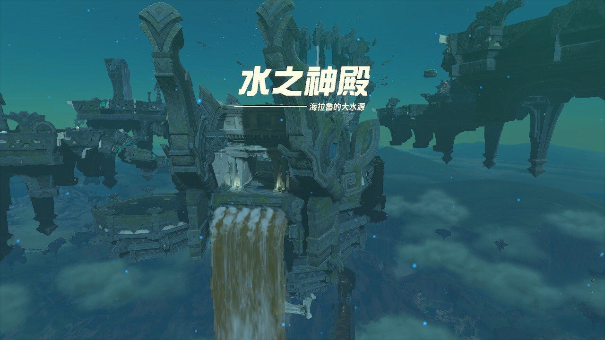
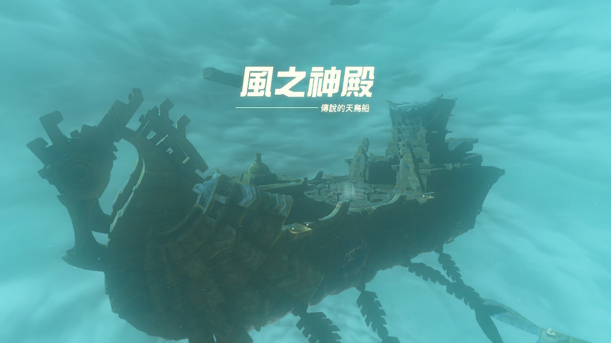
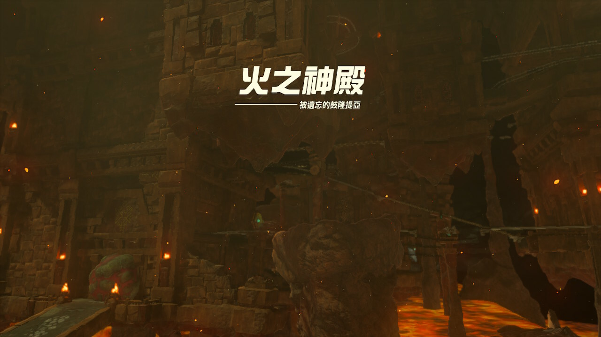
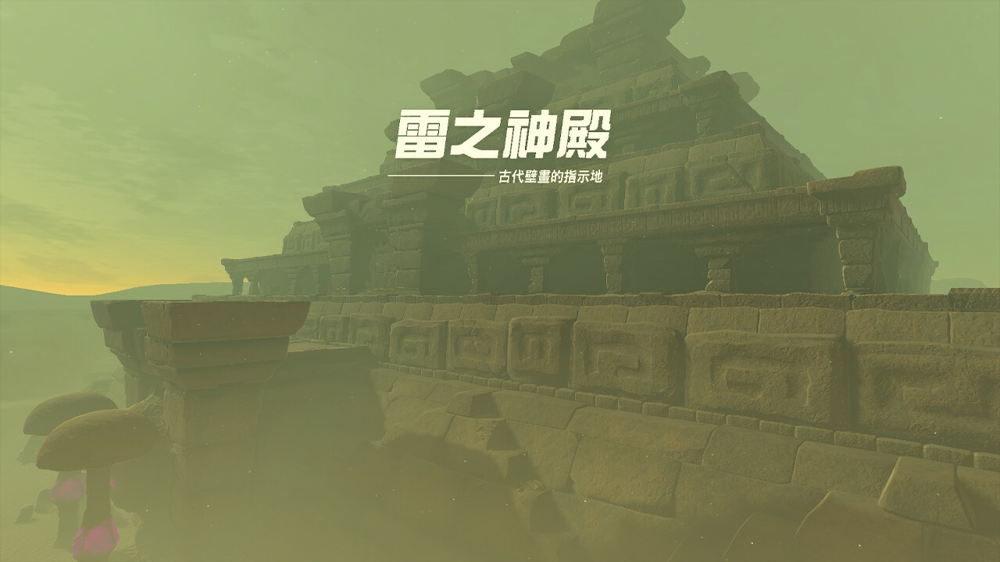

水之神殿位於卓拉領地，需爬上無視的瀑布並啟動水之神殿中央的圓形機關，利用希多的能力（水流控制）解謎。
攻略難度4/10

風之神殿位於西北部利特村，需要協助特巴一家找回丘栗，觸發尋找神殿任務再運用滑翔傘和通天術，穿越空島遺跡，進入巨大的風暴中心。Boss是「急凍蓋拉」，利用上升氣流和滑翔翼攻擊弱點。
攻略難度3/10

火之神殿位於格魯德沙漠深處的伊蓋隊基地，需先解除「格魯德地區」的災厄，並找到基地入口再深入伊蓋隊基地，利用「烈火使者」的技能（如使用雷電）解開機關，面對火屬性敵人與Boss。
攻略難度9/10

雷之神殿位於格魯德沙漠深處，需完成相關前置任務，擊敗怪物，解除封印以解鎖四道門鎖和四個蓄電池，大量使用「究極手」移動石塊、「扭轉乾坤」控制機關和鏡子，引導光線解除機關。
攻略難度7/10